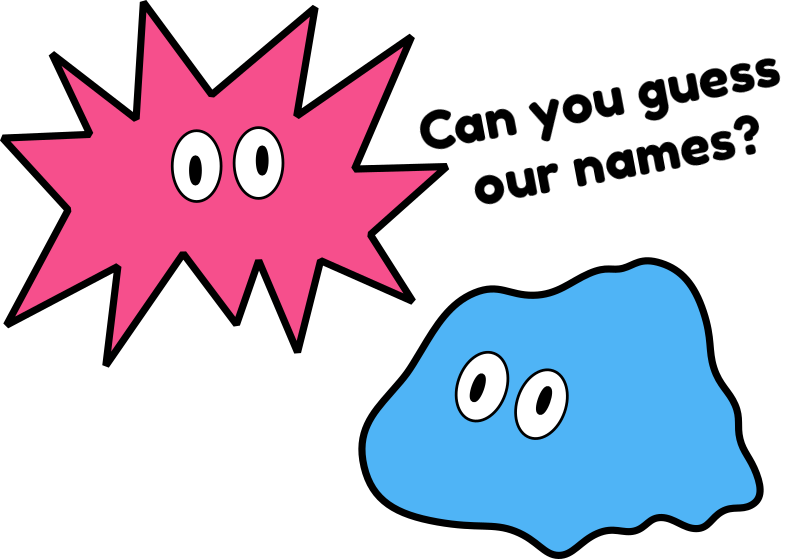

<!DOCTYPE html>
<html>
  <head>
    <!-- ORDER IS IMPORTANT. THESE MUST ALWAYS COME FIRST, IN THIS ORDER -->
    <script src="./js/p5/p5.js"></script>
    <script src="./js/circumplex.js"></script>
    <script src="./js/bkk.js"></script>

    <!-- Now the JsPsych specific stuff -->
    <script src="./js/jspsych/jspsych.js"></script>
    <script src="./js/jspsych/plugin-instructions.js"></script>    
    <script src="./bkk-plugins/bkk-survey-text.js"></script>
    <link rel="stylesheet" href="./js/jspsych/jspsych.css"></link>
    <link rel="stylesheet" href="./bkk.css"></link>


  </head>
  <body></body>
  <script>
    var timeline=[];
    var timeline1=[];
    
    
    var jsPsych = initJsPsych({
      on_finish: function() {
        jsPsych.data.displayData();
      }
    });

    var intro = {
      type: jsPsychInstructions,
      pages: ['<p>Welcome to the experiment.</p><p>You will have to create a spirit to fit a description.</p><br><p>Click next to begin.</p>',],
      show_clickable_nav: true
    };
    timeline.push(intro);

    var bkk_survey = {       
      type: jsPsychBKKSurveyText, 
      bkkColor:"#D7B27A",
      spike:127,
      complexity:127,
      noise: 127,
      move: 127,
      smooth: 127,
      gui_show:true,
      gui_hide_spike:false,
      gui_hide_complexity:false,
      gui_hide_noise:false,
      gui_hide_smooth:false,
      gui_hide_move:false,                    
      gui_hide_color:false,                              
      preamble: `</img>`,
      questions: [
        {prompt: 'Test Question ',placeholder: 'Test Placeholder?',rows:5, columns: 50, name:'test name'}
      ]
    }
    timeline1.push(bkk_survey);


    timeline.push.apply(timeline, timeline1);

    
    jsPsych.run(timeline);


</script>

</html>